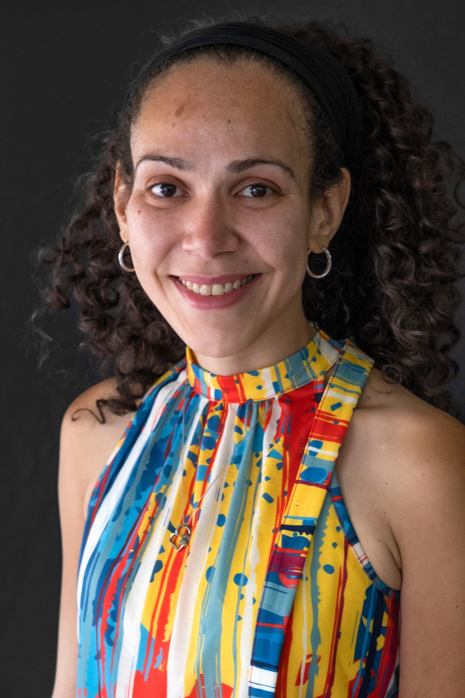
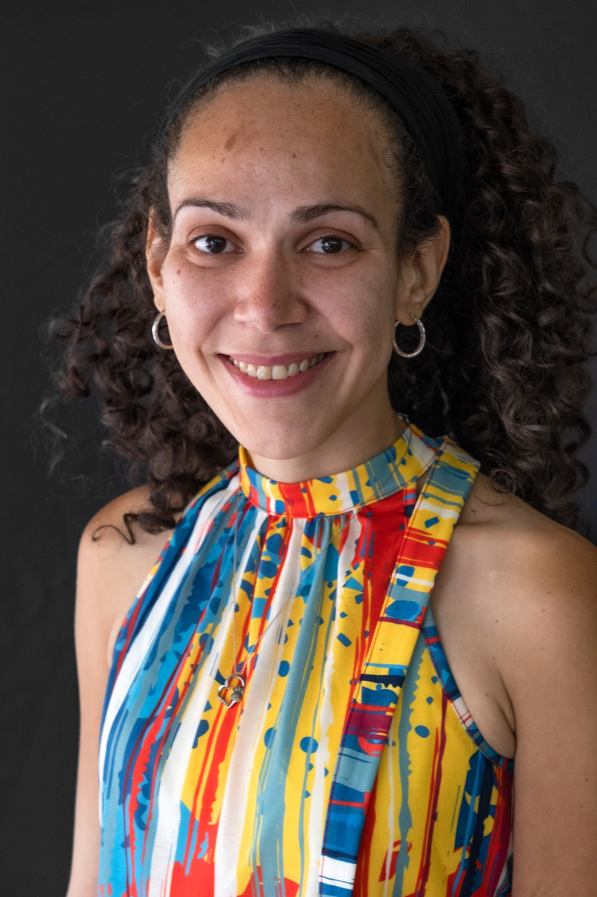

Check out CS Community News, Opportunities and Updates!
Upcomming CS Contest!
2022-2023 Kids Safe Online Poster Contest (Grades: K - 12) Deadline for submittals: December 16, 2022
NYS Office of Information Technology Services, Chief Information Security Office (ITS CISO) is conducting a kindergarten through 12th grade computer safety contest in conjunction with the Multi-State Information Sharing and Analysis Center (MS-ISAC).
Teachers are encouraged to use this contest as one way to begin addressing cyber security and online safety issues in the classroom.
To enter, have your students create posters that will encourage their peers to use the Internet and/or devices safely and securely, then sumbit them by the deadline.
For Digital Citizenship/Cyber Security Resources for teachers, parents and students (including a toolkit, games, tools, videos and more) click to visit "Keeping Kids Safe"
The Latinx Digital Leaders Now(DLN) initiative, CS4Latinx, is calling Latinx Entrepreneurs and Educators to join our growing community and impact Latinx representation in CS.
With a mission to increase historically underrepresented educators with CS skills, free membership includes incentives to support educators.
CS4Latinx educators are offered opportunities to participate in Computer Science (CS) professional development, earn micro-credentials,
and endorsements in STEM classrooms and across content areas. We know how important it is for teachers to reflect on the student populations they serve.
It’s also important to integrate language and culture with computer science and coding classroom experiences.
We know Diversity, equity, representation, and inclusion in the classroom matter!
 
